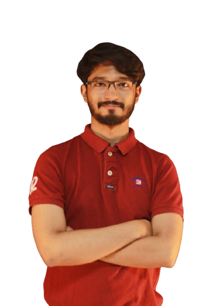

On Going
Publications
Projects
Experience
Activities
Contact

I am Ishtiaq Murshed. I’m a Chemical Engineering graduate from Bangladesh University of Engineering and Technology(BUET),
where I ignited my passion for groundbreaking research. I completed my HSC from Notre Dame College,
I’ve set my sights on revolutionizing sustainability, advanced materials, and molecular dynamics simulation through conducting novel and ground breaking
research. Apart from my studies, I interest in quizzing. As Vice President of BUET Brainiacs, I thrived on sparking innovation
and rallying my team. Besides, my hands-on volunteer work with BUET Rover Scout fueled my drive to make a difference.
I’m all about blending bold ideas, leadership, and purpose to engineer a vibrant, sustainable tomorrow!